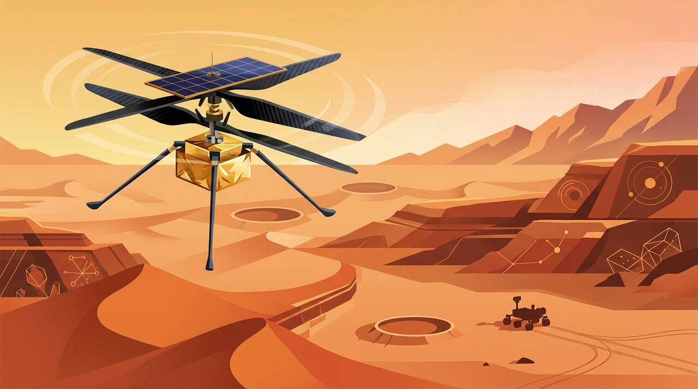
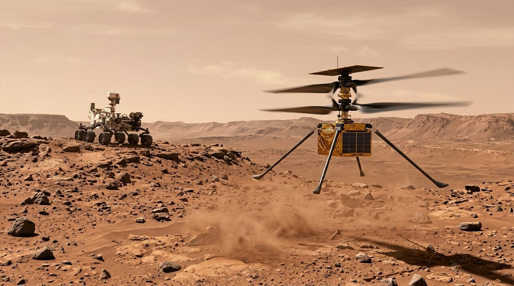

✨ Vol. I · Issue 01 · Explorer Notebook📅 Week of Nov 16 – Nov 22, 2026⏱ 10–15 Min Daily Discovery
🔭
Space · Robotics · AI · Minecraft Systems & Story
The Inquiry Lab
Theme: Seeing & Computing Beyond Human Limits · 突破感官与算力边界：望远镜、火星无人机、AI 博弈与红石逻辑
Weekly Stamp Card
MTWTFSS
Word Vault
💡 Tap any highlighted word (or any other English word!) to hear its pronunciation and unlock its Greek/Latin roots.🎓 Scholar = Full Depth · ⚡ Explorer = Quick Read
🚀 Mon · How the World Works · AstronomyScholar ~1190LExplorer ~1010L
· ⏱ 12 min
The Golden Time Machine: How Webb Reads Ancient Infrared Light
Why NASA folded eighteen gold-coated beryllium hexagons, parked them 1.5 million kilometers away, and tuned them to light human eyes can never see.
Pace
Voice
I. Looking Farther Means Looking Backward
Everybeam of starlight is a delayedpostcardfromthepast. Becauselighttravels at roughly 300,000 kilometerspersecond, sunlightreachesEarth in abouteightminutes, whereasstarlightfromneighboringgalaxiescrossesmillions of years of darknessbeforestrikingourdetectors. Launched on December 25, 2021, theJamesWebbSpaceTelescopewasengineered to pushthatcosmichorizonalmost to thedawn of theuniverse—capturinglightemitted by theearliestgalaxiesmorethanthirteenbillionyearsago.
Capturingsuchancientlightcreatestwoformidablephysicspuzzles. First, as theuniverseexpands, spaceitselfstretchestravelinglightwavestowardtheredend of thespectrum—a phenomenonastronomerscallredshift. Ultravioletandvisiblelightemitted by newbornstarsbillions of yearsagoarrives at oursolarsystemstretchedintoinvisibleinfraredradiation. Second, thickcurtains of interstellardustscattershortvisiblewavelengthslikefogdimsheadlights; however, longerinfraredwavelengthsgliderightthroughthoseclouds, revealinginfantstarsforminginside.
📐 Visual Principle · Why Infrared Pierces Cosmic Dust Sun Side +85°C → Mirror Side -220°C
Figure 1B: Short visible light waves bounce off cosmic dust particles, whereas stretched infrared wavelengths pass right through to Webb's cryogenic gold-coated beryllium mirror.
III. Eighteen Hexagons at Cryogenic Equilibrium
To collectfaintinfraredphotonswithoutblindingitselfwithitsownwarmth, Webbrelies on extraordinarymaterialsengineering. Its 6.5-meterprimarymirrorconsists of eighteenhexagonalsegmentscarvedfromberyllium—an ultra-lightmetalthatrefuses to warp in extremecold—coatedwith a microscopicallythinlayer of goldthatreflectsinfraredlightefficiently. Parked 1.5 millionkilometersfromEarth at theSun-Earth L2 Lagrangepoint, wheregravityandorbitalmotionreach a delicateequilibrium, Webbunfurls a five-layer, tennis-court-sizedsunshield. Whileitssun-facingsidebakesabove 85 degreesCelsius, itsinstrumentsstay in cryogenicshadowbelowminus 220 degreesCelsius, turningsilenceandcoldintoprecisionvision.
⚡ Explorer Track · Crisp Edition (~1010L)Short on time tonight? Same science, punchier sentences. Tap Scholar anytime for full depth!
I. A Telescope That Looks Back in Time
Lighttravelsfast, yetspace is unimaginablyhuge. Sunlighttakesabouteightminutes to reachEarth, whilelightfromdistantgalaxiestravelsforbillions of years. Launched on December 25, 2021, theJamesWebbSpaceTelescopeactslike a timemachine. It collectsfaintstarlightfromsome of theveryfirstgalaxieseverformed.
📐 Visual Principle · Why Infrared Pierces Cosmic Dust Sun Side +85°C → Mirror Side -220°C
Figure 1B: Short visible light waves bounce off cosmic dust particles, whereas stretched infrared wavelengths pass right through to Webb's cryogenic gold-coated beryllium mirror.
III. Gold Mirrors in the Deep Freeze
Webb's giant 6.5-metermirror is builtfromeighteenhexagonalpieces of lightweightberylliumcoated in puregold. It orbits 1.5 millionkilometersfromEarth at the L2 balancepoint, hidingbehind a five-layersunshield as big as a tenniscourt. Thatshieldkeepsitsinfraredcamerascolderthanminus 220 degreesCelsius so itsownheatneverblurstheview.
A young astronomy writer drafted this sentence for a science magazine, but it contains a comma splice (joining two complete sentences with only a comma). Choose the cleanest revision:
"Interstellar dust blocks ordinary visible light, however, longer infrared waves glide straight through those clouds."
Why does the author compare Webb's infrared vision to headlights in fog in Section II?
🚀 4. 60-Second Mission BriefOral Synthesis & Power Words
Imagine a classmate asks why NASA didn't just paint Webb's mirrors silver and put it in low Earth orbit like Hubble. Explain Webb's two big design choices in 60 seconds—or write 3 sharp sentences below!
Power Words:✨ infrared✨ equilibrium✨ cryogenic
01:00
🤖 Tue · How the World Works · Aerospace RoboticsScholar ~1180LExplorer ~1000L
· ⏱ 12 min
Seventy-Two Flights in Impossible Air: How Ingenuity Conquered Mars
Flying a helicopter in an atmosphere one percent as dense as Earth's—with zero live joystick control—forced robotics engineers to rethink flight.
Pace
Voice
I. The Physics of One-Percent Air
WhenNASAengineersproposedflying a robotichelicopter on Mars, skepticshad a compellingmathematicalobjection: Mars's tenuousatmospherehasroughlyonepercent of Earth's airdensity at sealevel. On Earth, helicopterbladesgenerateaerodynamiclift by pushingheavyairmoleculesdownward; on Mars, flyingnearthesurfacefeelsliketrying to hoverthirtykilometersaboveEarth—morethanthreetimeshigherthanMountEverest. EventhoughMartiangravity is onlyaboutthirty-eightpercent of Earth's, ordinaryrotorcraftwouldsimplysitstubbornly in thereddust.
当 NASA 工程师提议在火星上放飞一架机器人直升机时，质疑者提出了一个有力的数学反驳：火星稀薄的大气层密度仅相当于地球海平面的约 1%。在地球上，直升机桨叶靠向下推动浓密的空气分子产生空气动力升力；在火星表面飞行，相当于试图在地球上空 30 公里处悬停——比珠穆朗玛峰还要高出三倍多。尽管火星重力只有地球的约 38%，普通旋翼机依然只能纹丝不动地趴在红土里。
🖼 Figure 2A · Martian Flight


Figure 2A: IngenuityhoversaboverustyMartiandunes on twocounter-rotatingcarbon-fiberrotorswhileconductingaerialreconnaissanceahead of Perseverance.
II. Ultralight Blades and Autonomous Brains
To defeatsuchharshconstraints, Ingenuity's designersstrippedeveryunnecessarygramfromthe 1.8-kilogramspacecraft. Itstwocounter-rotating, 1.2-meterbladesweresculptedfromstiffcarbon-fibercompositeandengineered to spinnear 2,500 revolutionsperminute—roughlyfivetimesfasterthan a full-sizedpassengerhelicopter on Earth. Equallycrucialwasitsbrain. BecauseradiocommunicationlatencybetweenEarthandMarsrangesfromseveralminutes to overtwentyminuteseachway, humanpilotscouldneversteerIngenuitylive. Instead, engineersuploaded a flightplan in advance, andIngenuity's autonomouscomputeranalyzeddownwardcameraimagesthirtytimes a second to trackgroundfeatures, resistwindgusts, andlandsafely on itsown.
📐 Engineering Diagram · Counter-Rotating Lift on Mars1% Earth Air Density · ~2,500 RPM
Figure 2B: Spinning two counter-rotating carbon-fiber rotors in opposite directions cancels twisting torque without needing a heavy tail rotor.
III. From Five Test Hops to Aerial Scout
Originallybuilt as a high-risktechnologydemonstrationslatedforjustfiveexperimentalflights, Ingenuitystunnedmissioncontrollers by becoming a resilientoperationalpartner. Acrossnearlythreeyears, it survivedbrutalMartianwinternights, relayedcrispaerialtelemetryback to Earth, andperformedvitalreconnaissanceahead of thePerseverancerover—spottinghazardousbouldersandscientificallyintriguingrockoutcropsfromabove. By itsfinalseventy-secondflight on January 18, 2024, when a bladetipwasdamagedduringlanding on featurelesssand, Ingenuityhadproven a newparadigm: planetaryexploration no longerbelongssolely to wheels.
⚡ Explorer Track · Crisp Edition (~1000L)Short on time tonight? Same science, punchier sentences. Tap Scholar anytime for full depth!
I. Why Flying on Mars Is So Hard
Marshas a verythinatmosphere—onlyaboutonepercent as dense as Earth's air at sealevel. Helicoptersneedairmoleculespushingagainsttheirspinningblades to liftoff. EvenwithMars's lowergravity, an EarthhelicoptercouldneverleavetheMartianground.
Figure 2A: IngenuityhoversaboverustyMartiandunes on twocounter-rotatingcarbon-fiberrotorswhileconductingaerialreconnaissanceahead of Perseverance.
II. Fast Blades and Self-Driving Flight
NASAkeptIngenuitytiny—just 1.8 kilograms—andgave it twocounter-rotatingcarbon-fiberbladesspinningaround 2,500 timesperminute. Becauseradiosignalstakeminutes to travelfromEarth to Mars, nobodycouldfly it with a remotejoystick. Instead, Ingenuityused an autonomousonboardcomputeranddownwardcamera to guideitselfthrougheverytakeoffandlanding.
NASA 把机智号做到了仅 1.8 公斤重，并配备两副每分钟旋转约 2,500 转的反向碳纤维桨叶。因为地球发出的无线电信号需要几分钟才能传到火星，没人能用遥控手柄实时驾驶。机智号依靠机载自主计算机和下视摄像头独立完成每次起降。
📐 Engineering Diagram · Counter-Rotating Lift on Mars1% Earth Air Density · ~2,500 RPM
Figure 2B: Spinning two counter-rotating carbon-fiber rotors in opposite directions cancels twisting torque without needing a heavy tail rotor.
III. Five Planned Flights Became Seventy-Two
Engineersoriginallyhopedforjustfivetestflights. Instead, Ingenuityflewseventy-twotimesovernearlythreeyearsbeforeretiringafteritsJanuary 18, 2024 flight. Alongtheway, it acted as an aerialscoutforthePerseverancerover, provingthatfuturerobotscanflyacrossotherworlds.
Read the draft sentence carefully. It contains a dangling modifier (the opening phrase accidentally describes the wrong subject!). Pick the grammatically accurate version:
"Spinning at nearly 2,500 revolutions per minute, NASA engineers watched the telemetry confirm Ingenuity's liftoff."
Which fact from the passage best explains why Ingenuity's 72nd flight ended in blade damage?
🚀 4. 60-Second Mission BriefOral Synthesis & Power Words
If NASA asked you to design a flying robot for Saturn's moon Titan (which has thick air and very low gravity), what would be easier—and what new constraint would you worry about? Explain in 60 seconds or 3 sentences!
Power Words:✨ tenuous✨ autonomous✨ latency
01:00
🧠 Wed · How We Organize Ourselves · Artificial IntelligenceScholar ~1210LExplorer ~1020L
· ⏱ 12 min
Searching Smarter, Not Harder: Inside AlphaZero's Self-Play Mind
Why playing millions of games against itself let one general algorithm master chess, shogi, and Go—without reading a single human strategy book.
Pace
Voice
I. When Brute-Force Calculation Hits a Wall
Fordecades, computerscientistsbuiltgame-playingprograms by combininghumanchesswisdomwithbrute-forcespeed. Traditionalchessenginesevaluatedtens of millions of boardpositionseverysecond, relying on carefullytunedhumanheuristics—such as scoring a queen as ninepointsand a knight as three. Thatstrategytriumphed in chess; nevertheless, it collidedwith an exponentialwall in theancientboardgame of Go. With a nineteen-by-nineteengridofferinghundreds of legalmoveseveryturn, therearemorepossible Go boardconfigurationsthanatoms in theobservableuniverse, makingexhaustivecalculationutterlyhopeless.
Figure 3A: Guided by learnedneuralintuitionratherthanhand-codedheuristics, AlphaZeroprunesweakbranchesearlyandfocuseseachiteration on promisinglines of play.
II. Pairing Artificial Intuition with Tree Search
In December 2017, researchers at DeepMindunveiledAlphaZero, a generalreinforcementlearningsystemthatconqueredchess, shogi, and Go startingfrompurerules—no openingtextbooks, no historicalgrandmastergames, and no hand-codedpiecevalues. Instead of testingeverybranchblindly, AlphaZeropairs a deepneuralnetworkwithMonteCarloTreeSearch (MCTS). Whenever it examines a board, theneuralnetworkactslikeartificialintuition: it outputsboth a policy (whichfewcandidatemoveslookmostpromising) and a value (theestimatedprobability of winning). MCTSthenusesthoseestimates to pruneweakbranchesearly, examiningonlytens of thousands of positionspersecond—roughly a thousandtimesfewerthantoptraditionalchessengines—yetplayingfarmorecreatively.
📐 Algorithm Diagram · Monte Carlo Tree Search & PruningNeural Intuition + Selective Search
Figure 3B: Instead of testing every legal move by brute-force, AlphaZero uses neural probability estimates to prune weak branches immediately and focus calculation on high-value paths.
III. Learning from Scratch Through Millions of Iterations
Howdid a programstartingwithrandommovesdevelopgrandmaster-leveljudgment in hours? Throughrelentlessself-play. Playingmillions of gamesagainstcopies of itself on specializedTensorProcessingUnits, AlphaZerologgedwhethereachexperimentaltacticled to victory, draw, or defeat. Aftereveryiteration, itsneuralnetworkadjustedmillions of internalnumericalweights to favorwinningpatternsanddiscardweakhabits. Startingcompletelyfromscratch, it surpassedtheworld's topchessengineafterjustfourhours of traininganddefeatedearlierchampion Go programsaftereighthours—demonstratingthatmathematicalsearchguided by learnedintuitioncanoutperformmemorizedrules.
⚡ Explorer Track · Crisp Edition (~1020L)Short on time tonight? Same science, punchier sentences. Tap Scholar anytime for full depth!
I. Why Go Broke Traditional Game Programs
Classicchesscomputerswon by checkingtens of millions of moveseverysecondusinghuman-writtenscoringrules. Thatbrute-forcemethodworkedgreatforchess, but Go has so manypossibleboardsetups—morethantheatoms in theobservableuniverse—thatcheckingeverypath is impossible.
Figure 3A: Guided by learnedneuralintuitionratherthanhand-codedheuristics, AlphaZeroprunesweakbranchesearlyandfocuseseachiteration on promisinglines of play.
II. Thinking Like a Grandmaster with Fewer Calculations
In 2017, DeepMindintroducedAlphaZero, an AI thatlearnedchess, shogi, and Go knowingonlythebasicrules. It combinestwotools: a neuralnetworkthatactslikeintuition (picking a fewsmartmoves to inspect) andMonteCarloTreeSearch, whichteststhoseideasaheadwhilepruningbadbranches. Amazingly, AlphaZerochecksfarfewermovespersecondthanolderchessenginesyetplaysstronger.
📐 Algorithm Diagram · Monte Carlo Tree Search & PruningNeural Intuition + Selective Search
Figure 3B: Instead of testing every legal move by brute-force, AlphaZero uses neural probability estimates to prune weak branches immediately and focus calculation on high-value paths.
III. Millions of Practice Matches Against Itself
AlphaZerobegan by makingrandommovesagainst a twincopy of itself. Eachtime a matchended, it updateditsnetwork so winningideasbecamemorelikelynexttime. Afterjustfourhours of self-play in chessandeighthours in Go, it reachedsuperhumanstrengthwithoutreading a singlehumantextbook.
According to the passage, what is the fundamental difference between traditional chess engines and AlphaZero?
🚀 4. 60-Second Mission BriefOral Synthesis & Power Words
Why does an AI that learns by self-play sometimes invent moves human players never thought of? Is there any real-world problem where self-play would NOT work safely? Explain in 60 seconds or 3 sentences!
Power Words:✨ heuristic✨ prune✨ iteration
01:00
🧱 Thu · How the World Works · Digital Logic & SystemsScholar ~1200LExplorer ~1010L
· ⏱ 12 min
From Redstone Torches to Real Silicon: How Minecraft Builds Working Computers
Every binary calculator, memory latch, and playable mini-game constructed in Minecraft obeys the exact same Boolean logic running inside your iPad.
Pace
Voice
I. One-Bit Worlds and Fifteen-Block Constraints
At firstglance, Redstonedustlookslikeglowingvideo-gamemagicused to triggersecretpistondoors or automatedfarms. Yetbeneathitsblockyaestheticliesgenuineelectricalengineering. Just as realmicrochipsrepresenteverynumber, pixel, andsongusingbinaryvoltagestates—on (1) andoff (0)—a line of Redstonedustcarriesdiscretepowerstatesacross a world. Evenitsbuilt-inconstraintsmirrorrealphysics: a Redstonesignalstarts at strengthfifteenanddegrades by oneunitperblockuntil it fades to zero on thesixteenthblock, requiringrepeaters to refresh it. Meanwhile, everyrepeater or torchintroduces a propagationdelay of at leastoneRedstonetick—0.1 seconds, or twogameticks—forcingbuilders to synchronizecomplexmachinesjustlikerealchiparchitects.
Figure 4A: GlowingRedstonetorchesandrepeatersfollowtheexactsamebinarylogicrulesthatpowerbillions of microscopictransistorsinside a siliconprocessor.
II. Logic Gates: Turning Torches into Decisions
Thetruesuperpower of Redstoneemergeswhenplayerswirecomponentsintologicgates—tinydecisionmakersthattransforminputsintopredictablebinaryoutputs. Place a singleRedstonetorch on theside of a poweredblock, andyouhavebuilt a NOTgate: whenevertheinputturns on, thetorchswitchesoff, automaticallyinvertingthesignal. Combinetwotorchesfeeding a third, andyoucreate an ANDgatethatfiresonlywhenbothswitchesareactivesimultaneously. Wire a fewgatesinto an XOR ('exclusive OR') circuit—whichturns on onlywhentwoinputsdiffer—andyouholdthecoreingredient of a binaryaddercapable of addingnumbers in basetwo.
⚡ Interactive Redstone Logic Simulator · Tap Levers!
[ XOR CIRCUIT ]
Turns ON only when Input A and Input B are DIFFERENT
1
Redstone Lamp: LIT (15)
Figure 4B (Try It!): Tap Lever A, Lever B, and the three gate buttons above to test how Minecraft Redstone and iPad transistors compute binary decisions.
III. Abstraction and Turing Completeness
Oncebuildersmasterbasicgates, thesecret of computersciencekicks in: abstraction. Ratherthanstaring at thousands of individualtorches, engineersgroupgatesintoadders, connectaddersinto an ArithmeticLogicUnit (ALU), andwiresequentialmemorylatches (flip-flops) thatrememberpreviousvaluesbetweenclockticks. BecauseRedstoneprovideseveryuniversallogicgate, timingclocks, andexpandablememory, mathematiciansclassify it as Turing-complete: givenenoughspaceandpatience, a MinecraftRedstonecomputercantheoreticallycalculateanymathematicalproblemyouriPad's billions of microscopictransistorscansolve—justmillions of timesmoreslowly, andbigenough to walkinside.
⚡ Explorer Track · Crisp Edition (~1010L)Short on time tonight? Same science, punchier sentences. Tap Scholar anytime for full depth!
I. Redstone Follows Real Engineering Rules
Redstonedustmaylooklike a gametrickforbuildinghiddendoors, but it behavesremarkablylikerealcomputerwiring. Signalstravel up to fifteenblocksbeforefading to zero, so buildersplacerepeaters to boostthem. Eachtorch or repeateralsoadds a tiny 0.1-seconddelaycalled a Redstonetick, meaningbigmachinesmust be timedcarefully.
Figure 4A: GlowingRedstonetorchesandrepeatersfollowtheexactsamebinarylogicrulesthatpowerbillions of microscopictransistorsinside a siliconprocessor.
II. Building Decisions with Logic Gates
Realmicrochipsstoreeverything in binary—1 (on) and 0 (off)—usingtinyswitchescalledtransistors. InsideMinecraft, a singleRedstonetorchacts as a NOTgate by flipping 'on' into 'off'. Combinetorchesanddust, andyoucanbuildANDgates, OR gates, andXORgates—theexactbuildingblockscomputersuse to addbinarynumbers.
⚡ Interactive Redstone Logic Simulator · Tap Levers!
[ XOR CIRCUIT ]
Turns ON only when Input A and Input B are DIFFERENT
1
Redstone Lamp: LIT (15)
Figure 4B (Try It!): Tap Lever A, Lever B, and the three gate buttons above to test how Minecraft Redstone and iPad transistors compute binary decisions.
III. Walking Inside a Real Computer
By groupinglogicgatesintobiggermodules—a trickcalledabstraction—playersbuildcalculators, memorybanks, andevenplayablemini-gamesinsideMinecraft. BecauseRedstonehaslogicgates, clocks, andmemory, it is Turing-complete: givenenoughblocksandtime, it cansolveanymathproblem a realcomputercansolve!
The transition word in this draft creates the wrong logical relationship between the two ideas. Choose the transition that fits the true cause-and-effect meaning:
"A Redstone signal degrades by one unit per block until it dies after fifteen blocks; nevertheless, builders place repeaters along long circuits to refresh its strength."
What does the author mean by 'abstraction' in Section III?
🚀 4. 60-Second Mission BriefOral Synthesis & Power Words
Explain to someone who has never played Minecraft why a single Redstone torch is like a building block of an iPad chip! Bonus: how would you build a secret door that only opens when TWO hidden levers are flipped?
Power Words:✨ binary✨ invert✨ abstraction
01:00
🔭 Fri · How We Express Ourselves · Narrative & CraftScholar ~1180LExplorer ~1000L
· ⏱ 12 min
Four Beads on an Invisible Wire: Padua, January 1610
A narrative scene drawn from Galileo's real observational notebooks—when four luminous specks beside Jupiter quietly cracked a thousand-year-old sky.
Pace
Voice
I. Winter Glass in the Courtyard
Froststiffenedthecobblestones of Padua on theevening of January 7, 1610, turningGalileoGalilei's breathintobriefwhiteghostsbesidehisbrass-and-woodtube. Insidehisworkshop, he hadspentmonthsgrindingglassuntilhisknucklesached, coaxing a refractingtelescope to magnifythenightskytwentyfold. Everyuniversityprofessor in Europealreadyknew—or believedtheyknew—howtheheavensworked: Earthsatanchoredandmotionless at thecenter, whilecrystalspherescarriedtheSun, Moon, andwanderingplanetscleanlyaround it. YetGalileocarried a stubbornstreak of skepticism; he trusted a carefullygroundlensfarmorethan an untestedpage of ancientorthodoxy.
Figure 5A: Armedwithhealthyskepticismand a twenty-powerrefractinglens, GalileometiculouslytrackedfourtinymoonsorbitingJupiteracrossfreezingJanuarynights.
II. Three Little Stars That Refused to Sit Still
Aimingupward at Jupiter, Galileoexpected a pale, blurrydisc. Instead, throughthenarrowcircle of glass, threetinyluminousspecks—two to Jupiter's east, one to itswest—lined up neatlylikebeadsstrung on an invisiblewire. Backgroundstars, he toldhimself at first. Still, meticuloushabitmadehimdiphisquillandsketchtheirexactspacing: a smallcircleforJupiter, flanked by threesharpasterisks. Theverynextnight, curiositydraggedhimbackintothefreezingdark. When he pressedhiseye to thelens, hispulsequickened: allthreespecksnowstoodwest of thegiantplanet. Backgroundstars do notleapacrosstheskyovernight.
Figure 5B: By recording meticulous nightly sketches rather than trusting ancient orthodoxy, Galileo proved four moons orbited Jupiter instead of Earth.
III. The Quiet Collapse of an Ancient Sky
Cloudynightstormentedhim on theninth, thencleared to reveal a fourthcompanionjoiningthedance. NightaftershiveringnightthroughJanuary, GalileotrackedthefourwanderersweavingbackandforthacrossJupiter's flanks, neverdriftingaway as theplanetitselfcreptacrosstheconstellations. Theconclusionwas as inescapable as a geometricproof: theseweremoons—fourcelestialworldsorbitingJupiter, notEarth. Twomonthslater, Galileorushedhiscrisptreatise, SidereusNuncius ('TheStarryMessenger'), intoprint. Withink, patience, andtwopieces of curvedglass, he hadhandedtheheliocentricuniverseitsfirsteyewitnessproof—andshowntheworldthattheskystillheldsecretswaiting to be measured.
⚡ Explorer Track · Crisp Edition (~1000L)Short on time tonight? Same science, punchier sentences. Tap Scholar anytime for full depth!
I. A Cold Night with a Homemade Lens
On thefreezingnight of January 7, 1610, in Padua, Italy, GalileoGalileiaimedhishomemadetelescope at Jupiter. Forover a thousandyears, scholarstaughtthatEarthsatmotionless at thecenter of theuniverseandeverythingcircledaround it. Galileo, however, preferredcheckingtheskywithhisowneyes.
Figure 5A: Armedwithhealthyskepticismand a twenty-powerrefractinglens, GalileometiculouslytrackedfourtinymoonsorbitingJupiteracrossfreezingJanuarynights.
II. Little Lights That Moved
Throughhistwenty-powerlens, Galileospottedthreetinybrightspeckslined up besideJupiterlikebeads on a string. At first he thoughttheyweredistantbackgroundstars, yet he carefullysketchedtheirpositionsanyway. Thenextevening, he lookedagainandgasped: allthreespeckshadjumped to theotherside of Jupiter!
Figure 5B: By recording meticulous nightly sketches rather than trusting ancient orthodoxy, Galileo proved four moons orbited Jupiter instead of Earth.
III. Proof of a Bigger Universe
Withindays, a fourthtinymoonappeared. Nightafternight, GalileowatchedthefourworldsdancearoundJupiterwhileneverleavingitsside. In March 1610, he publishedhisfindings in a shortbookcalledSidereusNuncius ('TheStarryMessenger'), provingthatnoteverything in spaceorbitsEarth.
When you add an extra naming phrase (an appositive) that can be removed without breaking the sentence, it needs matching commas on BOTH sides. Spot the sentence punctuated correctly:
"Two months later, Galileo published his famous treatise Sidereus Nuncius, to share his sketches across Europe."
In Section I, why does the author describe Galileo's breath as 'brief white ghosts' and note that 'frost stiffened the cobblestones'?
🚀 4. 60-Second Mission BriefOral Synthesis & Power Words
Why was sketching what he saw—even when he first thought the dots were ordinary stars—the most important scientific habit Galileo showed that week? Answer in 60 seconds or 3 sentences!
Power Words:✨ skepticism✨ meticulous✨ heliocentric
01:00
🌊 Sat · Sharing the Planet · Deep Ocean & EuropaScholar ~1210LExplorer ~1020L
· ⏱ 12 min
Cities in Pitch Black: How Deep-Sea Vents Rewrote the Rules of Life
In 1977, a tiny titanium submersible found giant tube worms thriving without a single ray of sunlight—changing where astronomers hunt for alien life.
Pace
Voice
I. An Anomalous Spike on the Ocean Floor
Forgenerations, biologytextbooksopenedwithoneseeminglyunbreakablerule: allcomplexlife on Earthultimatelydepends on theSun. Plantscapturesunlightthroughphotosynthesis, herbivoreseatplants, andpredatorseatherbivores. In February 1977, geologistsaboardtheresearchsubmersibleAlvindescended 2,500 metersalongtheGalapagosRiftexpecting to studybarrenvolcanicrockandmeasure an anomaloustemperaturespikedetected by towedsensors. Instead, whenAlvin's floodlightsslicedthroughthepitch-blackwater, thecrewgasped at an impossibleoasis: fields of giantwhiteclams, ghostlycrabs, andtoweringcrimson-plumedtubewormsclusteredaroundventsgushingsuperheated, mineral-ladenwater.
Figure 6A: Twoand a halfkilometersbelowsunlight, Alvin's floodlightsrevealgianttubewormsthrivingthroughsymbiosiswithchemosyntheticbacteriaaroundvolcanicvents.
II. Chemosynthesis: Cooking Energy from Chemistry
No ray of sunlighteverpenetratestwoand a halfkilometers of ocean, so howdidthisbustlingmetropolisfeeditself? Biologistssoonuncovered an entirelydifferentengine of life: chemosynthesis. Aroundhydrothermalvents, seawaterseepsdownintohotcracksnearmagma, picks up dissolvedmineralsandhydrogensulfide—a compoundlethal to humans—anderuptsbackintothefreezingocean. Specializedextremophilebacterialivingaroundtheventsmetabolizethatchemicalsoup to manufactureorganicsugarswithoutneeding a singlephoton of sunlight. Gianttubeworms do notevenpossessmouths or stomachs; instead, theysurvivethroughremarkablesymbiosis, housingbillions of thesechemical-eatingbacteriadirectlyinsidetheirbodies.
📐 Biology Comparison · Two Engines of LifeSurface Sunlight vs. Abyssal Chemistry
Figure 6B: Discovering chemosynthesis in total darkness expanded astrobiology to subsurface oceans on icy moons like Jupiter's Europa.
III. From Earth's Abyss to Jupiter's Icy Moons
RememberthefourJovianmoonsGalileosketched in 1610? One of them—Europa—turnedthe 1977 oceandiscoveryinto a milestoneformodernastrobiology. SpacecraftflybysrevealthatbeneathEuropa's fracturedshell of solidicelies a vast, saltysubsurfaceoceankeptliquid by Jupiter's relentlesstidaltug. Sunlightcannotpiercekilometers of ice, whichoncemadeEuropaseemhopelesslysterile. Today, however, knowingthatlifeflourishesarounddarkhydrothermalvents on Earth's seafloorgivesplanetaryscientists a compellinghypothesis: whereverliquidwater, rock, andinternalheatmeet in thedark, a hiddenbiospheremightthrive.
⚡ Explorer Track · Crisp Edition (~1020L)Short on time tonight? Same science, punchier sentences. Tap Scholar anytime for full depth!
I. A Shocking Discovery Two Kilometers Down
Scientistsoncebelievedeveryecosystem on Earthdepended on sunlight. Then, in February 1977, geologistsdiving 2,500 metersdeep in thesubmersibleAlvindiscoveredhotunderwatersprings—hydrothermalvents—neartheGalapagosRift. Instead of emptymud, theirlightsrevealedgianttubeworms, clams, andcrabsthriving in totaldarkness.
Figure 6A: Twoand a halfkilometersbelowsunlight, Alvin's floodlightsrevealgianttubewormsthrivingthroughsymbiosiswithchemosyntheticbacteriaaroundvolcanicvents.
II. Living on Chemicals Instead of Sunshine
Howcouldanimalslivewheresunlightneverreaches? Specialbacterianeartheventsusechemosynthesis—turningvolcanicchemicalslikehydrogensulfideintofoodwithoutsunshine. Gianttubewormshave no mouths at all; theyteam up in symbiosis, lettingbillions of thosebacterialiveinsidethemandcooktheirmeals.
📐 Biology Comparison · Two Engines of LifeSurface Sunlight vs. Abyssal Chemistry
Figure 6B: Discovering chemosynthesis in total darkness expanded astrobiology to subsurface oceans on icy moons like Jupiter's Europa.
III. A Clue for Finding Life on Europa
Thisdiscoverytransformedastrobiology. One of themoonsGalileodiscoveredaroundJupiter—Europa—hides a hugesaltyoceanbeneath a thickshell of ice. EventhoughsunlightcannotreachEuropa's darkoceanfloor, underwatervolcanicventscouldstillpowerlifethere, justlike on Earth.
Don't get fooled by extra prepositional phrases sitting between the subject and the verb! Identify the true subject and choose the grammatically correct sentence:
"The discovery of hydrothermal vents teeming with strange extremophile bacteria have transformed how astrobiologists search icy moons."
How does Section III connect Saturday's deep-ocean article back to Friday's story about Galileo?
🚀 4. 60-Second Mission BriefOral Synthesis & Power Words
Why did finding giant tube worms on Earth's own ocean floor double the number of places scientists think alien life might exist in our solar system? Explain in 60 seconds or 3 sentences!
Power Words:✨ chemosynthesis✨ symbiosis✨ subsurface
01:00
✨ Sun · IB Reflection · Connecting the Week's Big IdeasScholar ~1190LExplorer ~1010L
· ⏱ 10 min
Measuring the Invisible: One Thread Linking Space, Robots, AI, and Redstone
Sunday wrap-up: What do a gold mirror at L2, a Martian drone, a self-playing neural network, and a Minecraft torch all teach us about thinking like a scientist?
Pace
Voice
I. Five Worlds, One Scientific Superpower
At firstglance, thisweek's sixexplorationswanderedacrosswildlyseparateworlds: a spacetelescopefrozenbeyondtheMoon, a carbon-fiberhelicopter on Mars, an AI masteringancientboardgames, binarycircuitsbuiltinsideMinecraft, a frostyItaliancourtyard in 1610, andvolcanicchimneysmilesbeneaththePacific. Lookcloser, however, andoneunifyingthreadbindsallsixtogether: everysinglebreakthroughemergedwhencuriousmindsrefused to acceptthelimits of barehumansenses—andbuilttools to turninvisiblepatternsintoempiricalevidence.
II. Constraints Are Design Blueprints, Not Roadblocks
A secondinsightleapsoutwhenyoucompareengineersacrossdisciplines: toughconstraintssparksharperdesign. ThinMartianairforcedIngenuity to spinultralightbladesautonomously; fifteen-blockRedstonedecaytaughtplayers to masterrepeaters, timingticks, andcleanabstraction; andthestaggeringnumber of Go boardstatespushed AI researchersbeyondbrute-forcecalculationtowardneuralintuitionpairedwithselectivetreesearch. Whetheryouarecalibrating a mirror to nanometerprecision or editing a clutteredparagraphforclarity, progresscomesfromunderstandingtherules of yoursystem—andworkingcleverlywiththem.
把不同领域的工程师放在一起对比，还会跃出第二条洞见：苛刻的约束条件往往是好设计的蓝图，而非拦路虎。稀薄的火星大气迫使机智号用超轻桨叶和自主大脑起飞；15 格红石衰减教会建造者驾驭中继器、刻同步与模块抽象；围棋天文数字般的局面数，推动 AI 研究者跳出暴力穷举，转向神经网络直觉与选择性树搜索的结合。无论你是把望远镜校准到纳米精度，还是精简一段冗杂的文字，进步都来自吃透系统规则——并巧妙善用它。
📐 Weekly Synthesis Map · Six Stories, One Scientific MindsetIssue 01 Concept Bridge
Figure 7B: True synthesis links separate discoveries together: every breakthrough used smart tools and system constraints to uncover empirical truth.
III. Your Weekly Researcher Checklist
Before a freshissuearrivesnextweek, takethreeminutes to visityourWordVaulttababove. Toggle on 'HideMeanings' andtestyourself on theacademicwordsandGreek or Latinrootsyoutappedthisweek—canyouspothow 'hydro-thermal', 'photo-synthesis', and 'geo-centric' unlockdozens of newsciencewords at once? Realinquiry is neveraboutmemorizingisolatedtrivia; it is aboutsynthesis—buildingmentalbridges so everynewdiscoverystrengthenseverythingyoualreadyknow.
在下周新一期到来前，花三分钟点开上方的 Word Vault（学术词库）标签页。打开“遮罩自测”，考考自己这周点查过的学术词和希腊/拉丁词根——你有没有发现，记住了 hydro-thermal、photo-synthesis、geo-centric 这些词根，就能一口气解锁几十个新科学词？真正的探究从不是死记孤立冷知识，而是综合（synthesis）——在脑海里搭起桥梁，让每一个新发现都加固你原有的知识体系。
⚡ Explorer Track · Crisp Edition (~1010L)Short on time tonight? Same science, punchier sentences. Tap Scholar anytime for full depth!
I. One Hidden Thread Across Six Stories
Thisweek we traveledfromtheJamesWebbtelescope to Mars, AlphaZero, MinecraftRedstone, Galileo's notebook, andthebottom of thePacificOcean. Allsixstoriesshareonebigidea: humansinventtools—lenses, sensors, logicgates, andalgorithms—to measureandunderstandthingsoureyesandbrainscannotreachalone.
Noticehoweveryengineerturned a strictlimitinto an invention. ThinMartianairinspiredfast, autonomoushelicopters; fifteen-blockRedstonedecayinspiredsynchronizedrepeaters; and Go's hugeboardinspired AI thatsearchessmarterinstead of harder.
留意每位工程师怎样把严格限制变成发明：稀薄的火星空气催生了高速自主直升机，15 格红石衰减催生了同步中继器，而围棋庞大的棋盘催生了更聪明而非更蛮力的 AI 搜索。
📐 Weekly Synthesis Map · Six Stories, One Scientific MindsetIssue 01 Concept Bridge
Figure 7B: True synthesis links separate discoveries together: every breakthrough used smart tools and system constraints to uncover empirical truth.
III. Weekend Word Vault Review
Beforenextweek's neweditionarrives, openyourWordVaulttabandtry 'HideMeanings' modeforthreeminutes! Reviewingthewordrootsyoutappedthisweekturnssinglewordsintokeysthatunlockdozens of futurescienceterms.
在下周新刊到来前，打开 Word Vault 词库试试 3 分钟“遮罩自测”！复习这周点过的词根，就像把单个词汇变成钥匙，帮你解锁今后几十个新的科学术语。
🧩 3-Minute Interactive Lab · Language Craft & IB Inquiry
Sharpen sentence precision, test critical reading, and put today's words into action!
Which statement best captures the unifying theme of Sunday's synthesis essay?
🚀 4. 60-Second Mission BriefOral Synthesis & Power Words
Which of this week's 6 topics surprised you the most—JWST, Ingenuity, AlphaZero, Redstone Logic, Galileo, or Deep-Sea Vents? Tell Mom or Dad your favorite discovery AND one question you still want to investigate next week!
Power Words:✨ empirical✨ constraint✨ synthesis
01:00
🧬 Personal Academic Lexicon & Root Bank
Word Vault & Greek/Latin Roots
Every word you tap while reading jumps to the top! Try Self-Test Mode on Sunday.
✏️ Sentence Engineering Handbook
The Explorer's Craft Guide
Seven sentence-building secrets used by science authors, inventors, and IB writers.
Rule 1 · Semicolons & Conjunctive Adverbs
Never join two full sentences with only a comma + however
Words like however, therefore, consequently, and nevertheless need a semicolon (;) before them and a comma (,) after them.
✓ Sharp: Visible light scatters in dust; however, infrared glides right through.
Rule 2 · Dangling Modifiers
Put the real doer right after an opening phrase
Whoever performs the action in an opening -ing or -ed phrase must be the very first noun after the comma.
✓ Sharp: Spinning at 2,500 rpm, Ingenuity lifted off from Martian sand.
Rule 3 · Parallel Structure
Keep items in a list matching in grammar
If item 1 starts with an -ing verb or infinitive, make items 2 and 3 match the exact same shape.
✓ Sharp: AlphaZero improved by playing, analyzing, and adjusting.